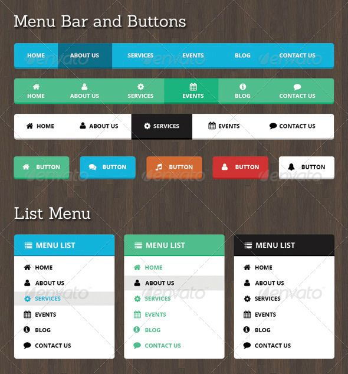

El diseño web es más que solo código. La estética, funcionalidad y experiencia de usuario juegan un papel clave en la creación de una página web que no solo atraiga visualmente, sino que también ofrezca una navegación intuitiva y eficaz.
En este artículo, profundizaremos en los fundamentos esenciales del diseño web, explorando cómo combinar elementos visuales y técnicos para construir una interfaz que comunique la identidad de tu marca y facilite la interacción del usuario.
Todo buen diseño comienza con una estructura sólida. La elección de la tipografía, la paleta de colores y la disposición de los elementos son pilares fundamentales para crear una identidad visual coherente y atractiva.
Además, la jerarquía visual y la organización del contenido permiten guiar al usuario de manera natural a través de la información, haciendo que la experiencia de navegación sea fluida y agradable.
Una página web atractiva combina el atractivo visual con una funcionalidad impecable. La estética se logra mediante un diseño limpio y moderno, mientras que la funcionalidad se refleja en una estructura intuitiva que facilita la navegación.
Es esencial que cada elemento visual cumpla una función: desde los botones de llamada a la acción hasta las imágenes y gráficos, todo debe trabajar en conjunto para mejorar la experiencia del usuario.
La experiencia de usuario (UX) es la clave para retener a los visitantes y convertirlos en clientes leales. Un diseño responsivo asegura que tu sitio se vea y funcione perfectamente en dispositivos de cualquier tamaño, desde computadoras de escritorio hasta smartphones.
Invertir en pruebas de usabilidad y en la optimización del rendimiento te permitirá detectar y corregir problemas antes de que afecten la interacción del usuario, garantizando una experiencia digital sin interrupciones.
Crear una página web atractiva es un proceso integral que requiere la perfecta combinación de creatividad, técnica y atención al detalle. Un diseño bien ejecutado no solo mejora la apariencia de tu sitio, sino que también optimiza la experiencia del usuario, impulsando el compromiso y la conversión.
Dedica tiempo a planificar cada aspecto de tu web y verás cómo se transforma en una herramienta poderosa para comunicar tu mensaje. Mira ejemplos de trabajos web aquí y descubre cómo el diseño puede marcar la diferencia en el éxito de tu proyecto digital.
Categorías: Web, Diseño